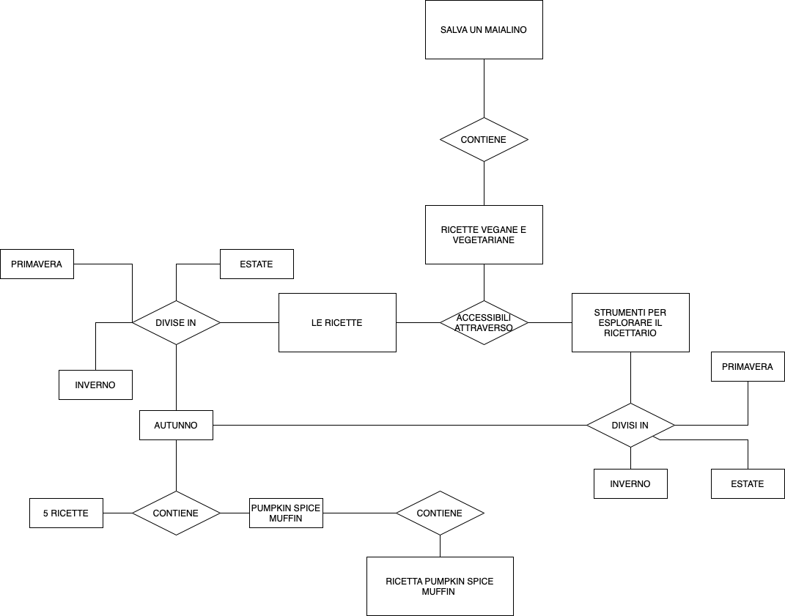
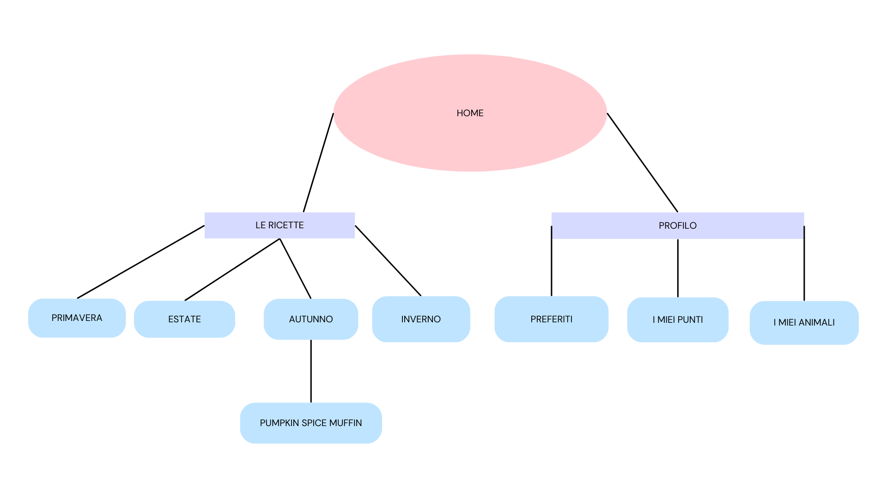
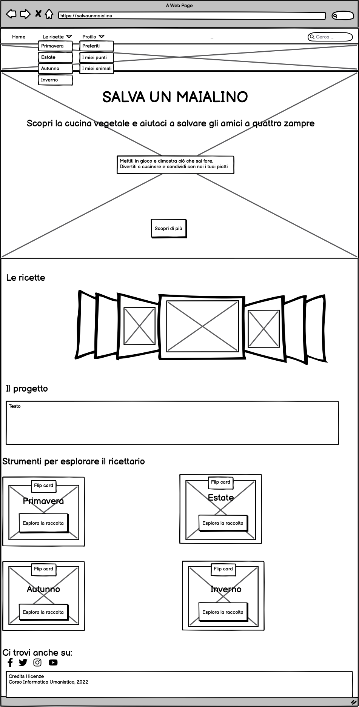
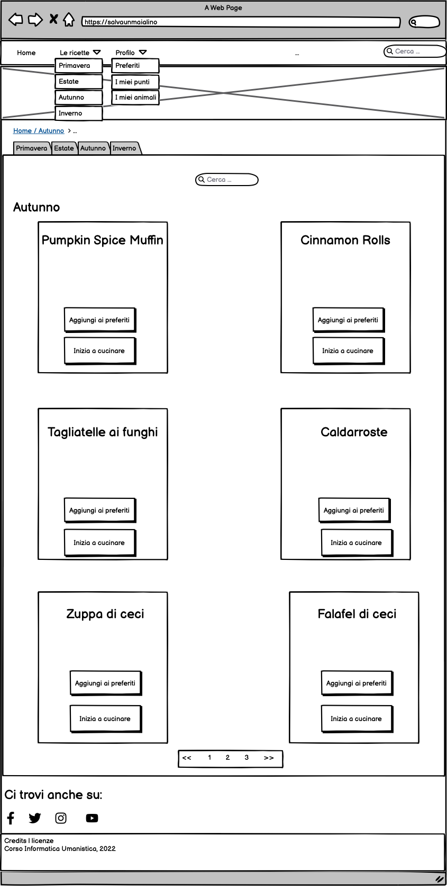
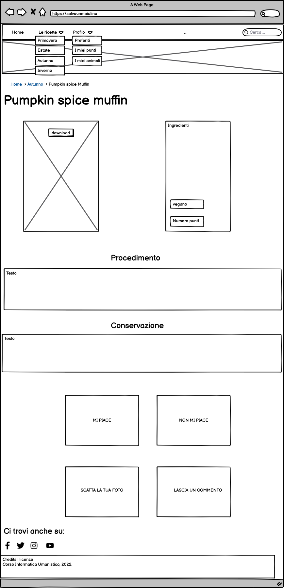

Indice
Brief
Obiettivi e finalità
Il progetto Salva un maialino nasce con lo scopo di offrire agli utenti una raccolta di ricette vegetali da poter seguire qualora volessero sperimentare un nuovo tipo di cucina o semplicemente adottare un'alimentazione più sostenibile.
L'obiettivo del progetto è quindi offrire agli utenti una raccolta di ricette, divisa in base alle stagioni per promuovere frutta e verdura di stagione. Gli utenti, dopo aver eseguito il piatto, potranno postarne la foto e, una volta caricata, riceveranno dei punti con cui poter "salvare" un maialino da un allevamento intensivo e portarlo quindi al sicuro in un rifugio.
Utente tipo
Il progetto nasce dall'idea che ognuno può far parte del cambiamento, di consegunza, non solo è rivolto a tutti coloro che desiderano cambiare il proprio regime alimentare e non sanno da dove cominciare ma anche a chi già segue una dieta vegetale e vuole provare nuove ricette.
Benchmark
Esistente e competitors
Esistono molte risorse online che propongono alternative vegetali ai soliti piatti di carne e derivati come, per esempio, Cucina Botanica o ElefanteVeg. Entrambi i siti, però, propongono alternative completamente vegane e molte persone non si sentono pronte ad affrontare un cambiamento così radicale del proprio stile di vita e preferiscono magari iniziare da una dieta vegetariana. Inoltre, le risorse appena citate, come molte altre presenti sul web, non danno la possibilità ai propri utenti di interagire in modo attivo con il progetto presentato.
Un sito molto utile per approcciarsi alla cucina vegetale è sicuramente ElefanteVeg che propone solamente ricette vegane. Tuttavia, il sito Salva un maialino propone sia ricette vegetariane che vegane, in modo che tutti possano usufruire dei contenuti proposti. Inoltre, il sito di ElefanteVeg non è molto efficace dal punto di vista dell'accessibilità in quanto il percorso per tornare alla home, una volta trovatisi in una pagina del sito, non è ben definito. Inoltre non dà la possbilità all'utente di interagire in quanto, a differenza di Salva un maialino, non è presente nè una sezione per pubblicare la foto del piatto nè una sezione dedicata ai commenti.
Un altro sito competitor è Gusto Vegetariano che, come Salva un maialino, presenta sia ricette vegetariane che vegane, divise anch'esse per stagioni. Tuttavia, dal punto di vista dell'accessibilità, non è ben definito in quanto si, la navbar è sempre presente, ma una volta nella pagina dell'item non è possibile tornare alla pagina primaria, possibilità che il nostro sito presenta attraverso le briciole di pane. Inoltre, Salva un maialino propone un progetto volto a salvare vite animali che non può realizzarsi senza la partecipazione attiva degli utenti.
Il sito Giallo Zafferano è stato d'ispirazione per quanto riguarda le sezioni "scatta la tua foto" e "lascia un commento".
Struttura
Mappa concettuale
Nella mappa dei concetti vengono illustrati graficamente i rapporti che intercorrono tra le diverse componenti del sito
Schema delle dipendenze
Lo schema delle dipendenze mostra la struttura gerarchica del sito. Dalla Home, attraverso la barra di navigazione, è possibile accedere alla raccolta di ricette e al proprio profilo. Attraverso i dropdown, sempre presenti nella barra di navigazione, è possibile accedere alla pagina primaria (denominata "Autunno") contenente la raccolta di ricette. Infine, dalla pagina primaria si accede direttamente alla pagina dell'item
Categorie di un item foglia
Il sito presenta una sola tipologia di item ovvero le ricette
- Titolo (DC: Title): Pumpkin spice muffin
- Autore (DC: Creator): Sonia Gualandi
- Argomento (DC: Subject): ricetta
- Editore (DC: Publisher): Altervista
- Lingua (DC: Language): it
- Diritti (DC: Rights).
Layout
In tutte le pagine è presente un header con il motto del sito (cioè la frase che, secondo noi, descrive l'essenza della cucina vegetale), una navbar ovvero il canale di navigazione primaria in cui è possibile individuare i sottocanali attraverso i dropdowns (navigazione secondaria) e cercare direttamente gli items attraverso una search box. Inoltre, è sempre presente un footer con i contatti social e il link al web project plan. La scelta dei social non è casuale: Facebook è pensato come luogo dove creare una community e un gruppo interno in cui si può conoscere meglio il team creatore del progetto; Twitter per notizie sui nostri animali; Instagram per i reel-tutorial e per restare sempre aggiornati; infine Youtube per video divulgativi e tutorial delle ricette.
Home
Nella pagina home, oltre agli elementi sopra descritti, troviamo l'immagine rappresentativa del sito contenente il titolo, il sottotilo e il bottone che conduce alla descrizione del progetto. Di seguito troviamo uno slideshow che mostra alcune delle ricette contenute nella raccolta; la descrizione del progetto e la sezione degli strumenti di navigazione divisa nelle quattro stagione che riportano alle pagine delle diverse raccolte.
Pagina primaria
Nella pagina primaria troviamo, oltre agli elementi già citati, i breadcrumbs che facilitano il ritorno alla Home; una tab suddivisa nelle quattro stagioni, aperta sulla stagione "Autunno" contenente la raccolta di items; un bottone di ricerca e la pagination che conduce alle pagine successive. Ogni ricetta qui presente ha un bottone per poterla aggiungere ai preferiti e uno per poterla visualizzare cioè "iniziamo a cucinare" da cui si apre la pagina dell'item
Pagina item
Nella pagina item troviamo, per prima cosa, i breadcrumbs per poter facilmente tornare indietro; il titolo della ricetta (Pumpkin spice muffin) e la foto contenente il bottone per il download. Di fianco vengono presentati gli ingredienti, le dosi e i punti che si accumulano seguendo questa ricetta. Di seguito troviamo il procedimento da seguire per poter portare a termine il piatto e la conservazione dell'alimento. Infine, sotto, sono presenti i bottoni per mettere mi piace o non mi piace alla ricetta, la sezione in cui poter postare la propria foto e infine quella dedicata ai commenti.
Usabilità
Il sito cerca di essere efficace e comunicare con l’utente attraverso i colori e le immagini. I colori predominanti in tutto il sito sono il rosa e le sue sfumature che sono stati scelti per suscitare tenerezza e gentilezza verso il tema che il progetto si propone di veicolare e inoltre riprende il caratteristico colore dei maialini. Un altro colore che viene usato spesso è il nero. Questo colore è stato scelto per i titoli delle sezioni del sito e per la descrizione dell'item. Nella pagina primaria, invece, troviamo un colore che richiama la stagione autunnale (marrone-arancio) in quanto si vuole creare un legame che faccia sentire l'utente dentro alla stagione stessa. Infine, nella stessa pagina, viene utilizzato anche il colore rosso per evidenziare i bottoni delle ricetta.
Per la tipografia si è scelto un unico font, “Lora”, perché comprensibile da qualsiasi utente e uno dei più apprezzati per accessibilità. L’usabilità è inoltre garantita anche dalla responsività del sito, per cui i link cambiano sempre stato al passaggio del mouse, il cursore si trasforma in corrispondenza dei bottoni, la navbar è sempre raggiungibile in quanto è posizionata come "sticky" e in ogni pagina sono presenti i breadcrumbs.
Servizi
Il sito è navigabile attraverso un canale di navigazione primaria cioè la navbar con dropdown da cui si può accedere a tutte le pagine del sito e con barra di ricerca che è presente in tutte le pagine in posizione sticky. Nella pagina primaria sono presenti sia la paginazione che le briciole di pane, mentre nella pagina item troviamo solamente le briciole di pane. Nella home troviamo diversi strumenti di interazione come uno slideshow e delle card che permettono l'accesso alle diverse pagine. Nella pagina primaria e dell'item sono presenti diversi bottoni che permettono all'utente di interagire. Infine nel footer troviamo le icone dei social media che l'utente può utilizzare per seguirci anche su altre piattaforme.
Bibliografia
Bibliografia contenuti
- Carlotta Perego, Cucina Botanica. Gribaudo editore. Verona, 2021
- Tomasi Francesca, Metodologie informatiche e discipline umanistiche. Carocci, Roma 2008.
- Tomasi Francesca, Organizzare la conoscenza: Digital Humanities e web semantico. Editrice bibliografica, Milano 2022.
Bibliografia progettazione sito
- https://www.w3schools.com/howto/
- https://www.canva.com/
- https://app.diagrams.net
- https://balsamiq.cloud/st437i1/projects
- https://virtuale.unibo.it/
- https://www.giallozafferano.it
Per le immagini sono stati scelti i contenuti Creative Commons di Google immagini.